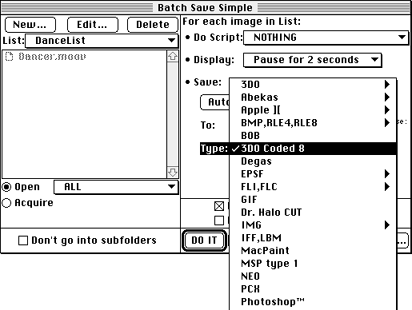

A CCM module for use with DeBabelizer makes it possible to create single
8-bit coded cels or batch process source art to create multiple 8-bit
coded cels.
Note: Use the Batch Save option and select the 3DO Coded-8 type
when saving a cel. DO NOT USE the Batch Export option. If you use the
Batch Export option you will receive indeterminate results.

Dialog for saving an 8-bit coded cel from
DeBabelizer.
For more information
You can specify a transparent channel and set other options for the cel
using the Coded-8 CelWriter dialog that appears in the save process (see
Creating cels with the 3DO Coded-8
CelWriter.)